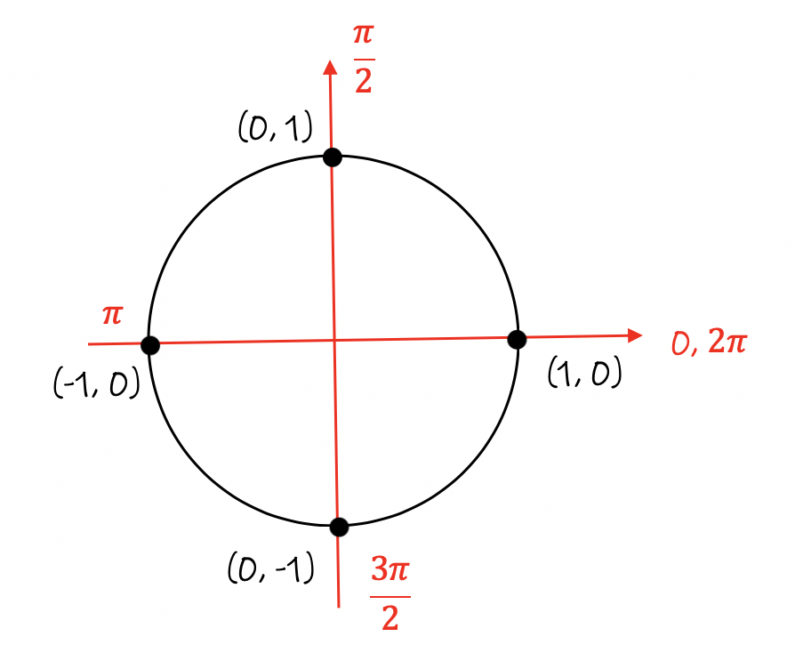
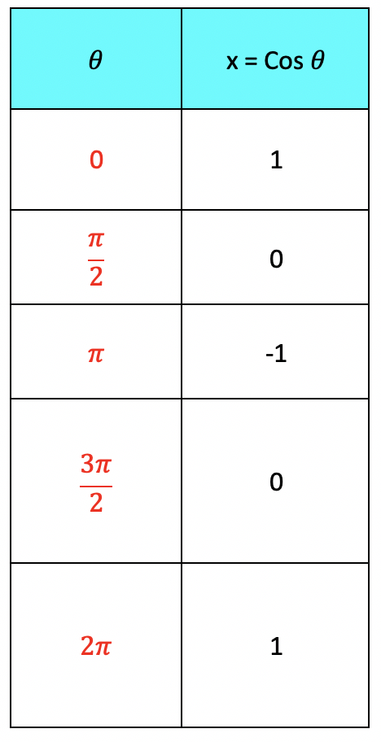
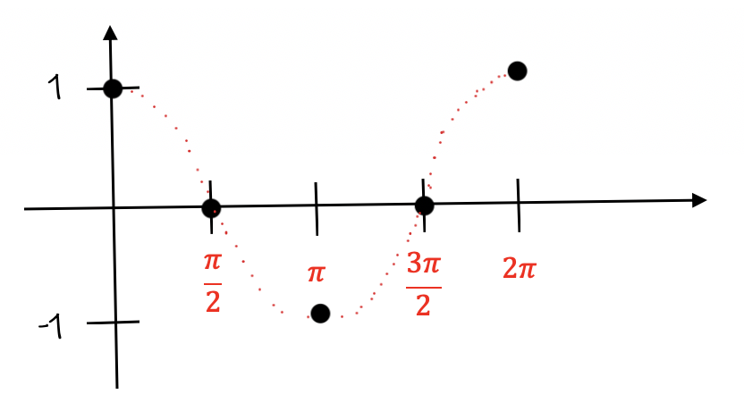
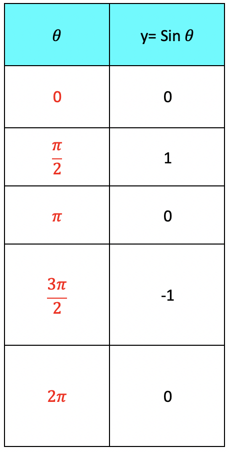
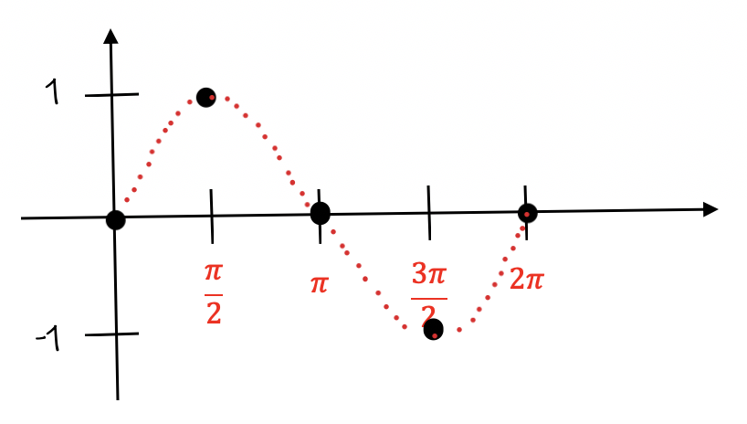

In this module, we will cover the method used to graph the sine and cosine functions.
Given a "Unit Circle", there are four main points that create the circle. A Unit Circle has a radius = 1 unit.

There are 4 main points that create the unit circle. Two on the x-axis and two points on the y-axis.
(0, 0), (0, 1), (-1, 0), (0, -1)
Each of these (x, y) ordered pairs will be used to create the Sine and Cosine graphs. The x-coordinate = cos θ, the y-coordinate = sin θ.
To graph the cosine function, we will use a table of values.

We will plot the 5 points on a graph and connect them together.
The Cosine Function:

The Graph of the Sine Function
Using the same approach we will graph the Sine function.
We will use a Table of Values first.

We will plot the 5 points on a graph and connect them together.
The Sine Function:

Notice each graph is drawn using curves to connect the points. The graphs look like a wave. It will always look the same when you graph each function.